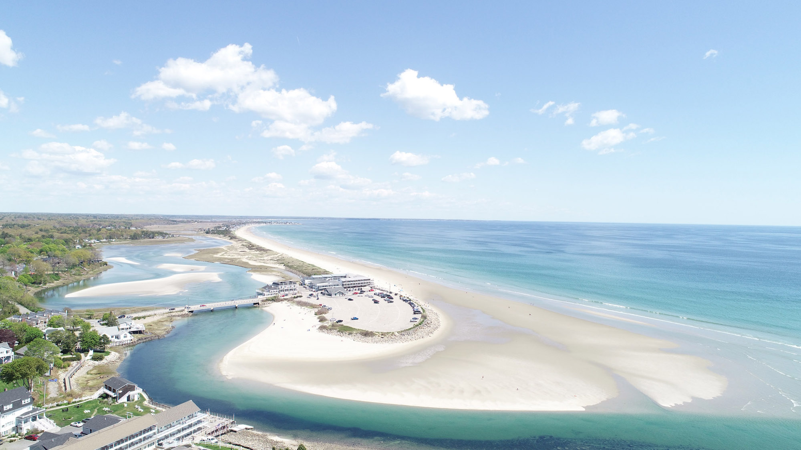
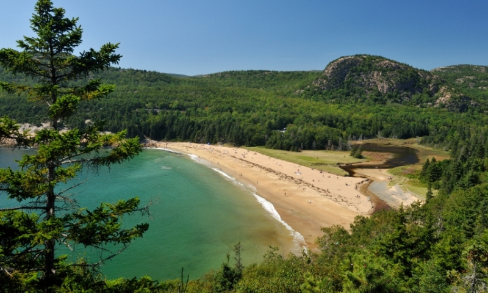

Below, you can view a photo of Ogunquit beach, this becah is 3.5 miles long and has soft white sand with tidal pools you can explore.

The Sand Beach, located in Acadia National park is very cold, rarely over 55 degrees and also very small, only 290 yards, but it is known as the second prettiest beach in Maine.

Home